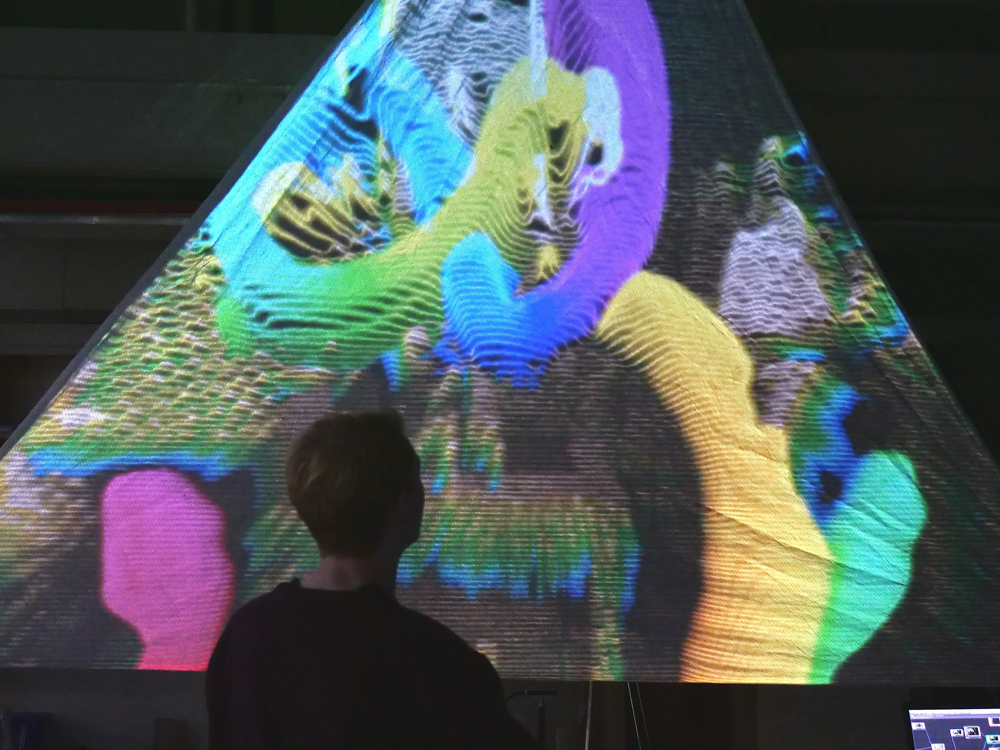

This is an interactive art installation I worked on fall 2018 with one friend. The idea was to create and protype something that wouldn't feel out of place at the Coachella music festival.

I used my infrared/depth camera to create a variety of real-time interactive visuals that were to be displayed on six separate "sepals" on the rose. The visuals include interactive particle rain, "drawing" with a phone flashlight, and more. I uploaded a demo repo to allow people with TouchDesigner to download and run the visuals.
Demo Video